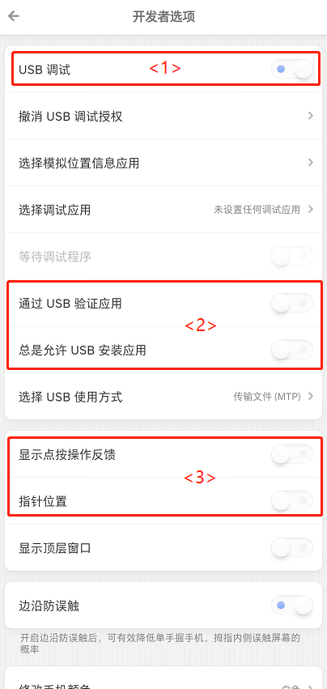
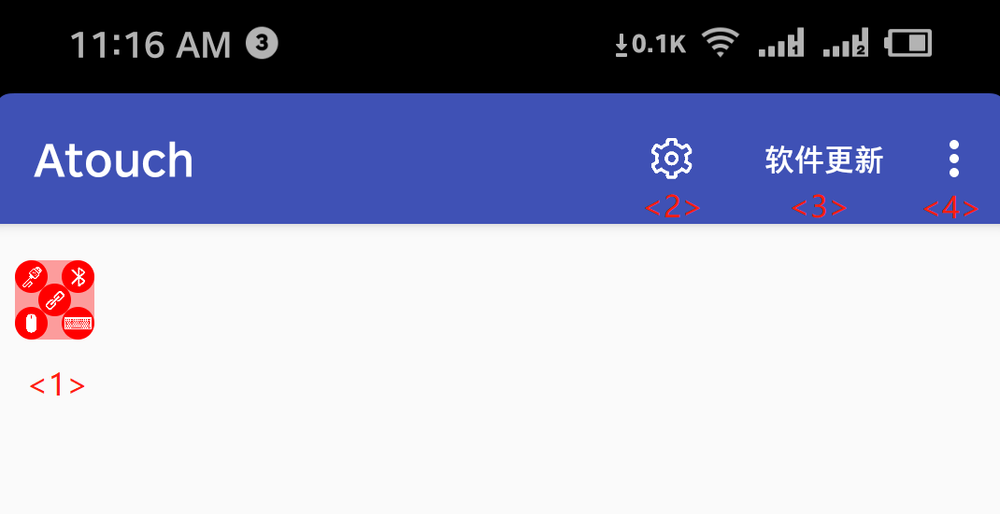
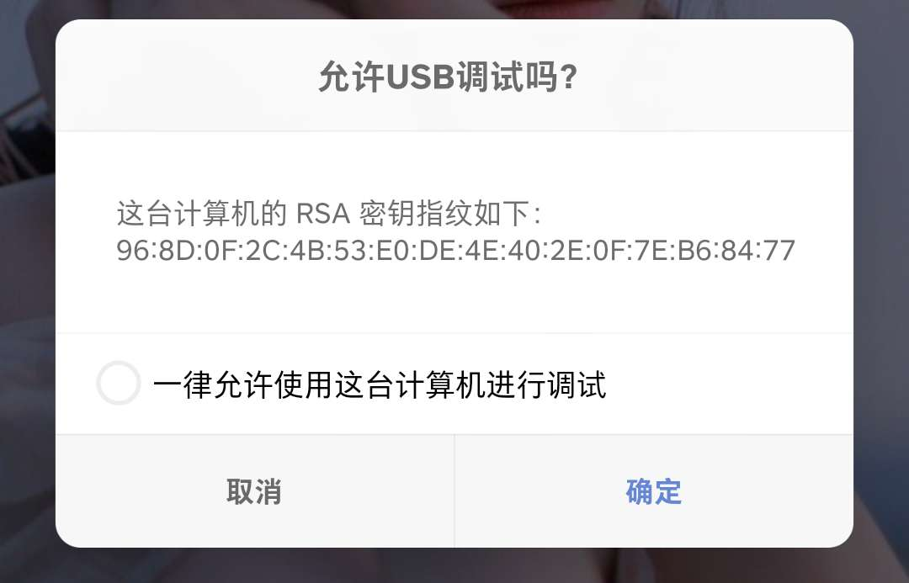
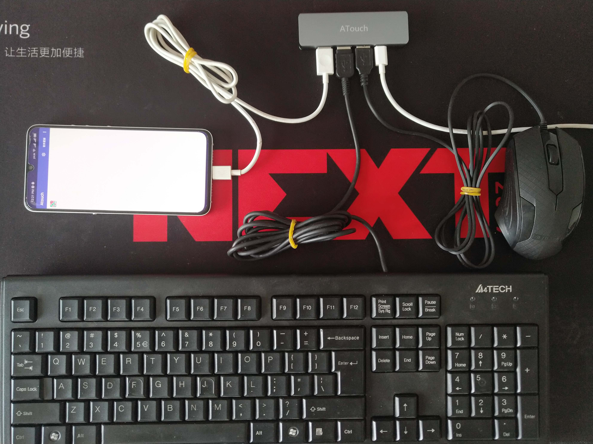
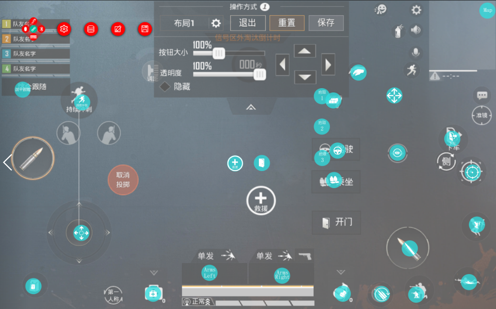
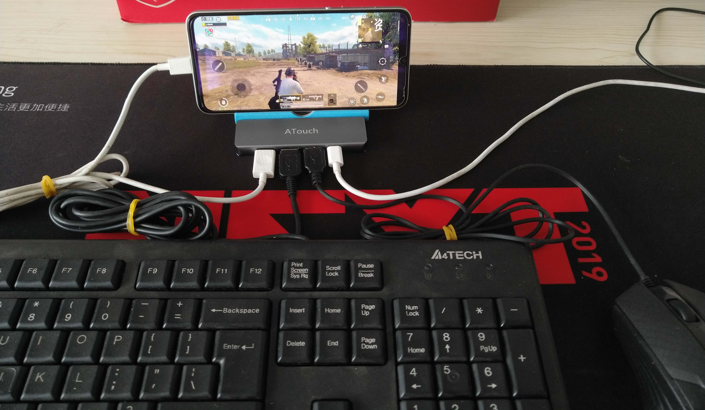

ATouch 使用说明
- 为了使每一位小伙伴都能理解如何使用，请务必按顺序阅读。
- 本教程是使用ATouch外壳版，有线连接手机(电脑数据线插手机)的方式提供说明的。
1. 使用ATouch所需基本前提
1.1 ATouch硬件设备

* 手上没有的话，请先购买: 购买链接
* 旧版(无外壳版同样可以使用)
1.2 Android手机
- Anroid手机支持支持主流大厂手机，Android版本5.0及以上提供支持，5.0以下不管。
- 由于目前测试机型较少，出现问题请及时反馈。

1.3 至少两根数据线
- 数据线一根是连接ATouch和手机的，另一根给ATouch提供用电。

2. 打开Android手机的调试模式
- Android手机的调试模式是使ATouch与手机数据线连接进行ADB通讯的前提，所以务必打开。
-
关于如何打开手机的调试模式，各厂家的操作入口可能都不同统一，下面提供一些常见厂商的手机调试模式打开方法的连接。
华为手机
小米手机
OPPO手机
VIVO手机
三星手机
一加手机
如果没有你的品牌手机打开调试模式方法链接提供，请自行百度
-
打开调试模式后如图所示

| 序号 | 说明 |
|---|---|
| <1> | 务必打开USB调试 |
| <2> | 确保该处两项为关闭状态 |
| <3> | 在调试触摸位置的过程中，打开这个选项可以帮助调试 |
- 有位红魔5G用户必须将"通过USB验证应用"关闭才可以使用，所以请确保将其关闭。
3. 手机安装所需软件
-
两个安装完成后你会发现手机出面出现了一个图标

-
打开软件会看到如下界面


| 序号 | 说明 |
|---|---|
| <1> | 悬浮状态指示/操作控制窗口 |
| <2> | 设置按键 |
| <3> | 软件更新按键 |
| <4> | 更多选项 |
- 关于悬浮窗口的说明

| 序号 | 说明 |
|---|---|
| A | 手机APP与ATouch后台服务程序连接状态指示，连接成功将变成绿色 |
| B | 手机APP与ATouch开发板USB连接状态指示，连接成功将变成绿色 |
| C | 手机APP与ATouch开发板蓝牙连接状态指示，连接成功将变成绿色 |
| D | ATouch开发板与鼠标连接状态指示，连接成功将变成绿色 |
| E | ATouch开发板与键盘连接状态指示，连接成功将变成绿色 |
4. 查看安装软版本
- 点击APP界面上的"软件更新"按钮会弹出安装状态

| 序号 | 说明 |
|---|---|
| <1> | 当前安装的APP版本 |
| <2> | 远程可安装下载的APP版本，如果远程版本大于本地版本，则可以点击"升级"按键进行APP升级 |
| <3> | 当前安装的后台服务软件版本，如果没有安装会显示"失败"，请务必确保已安装后台服务 |
| <4> | 远程可安装下载的后台软件版本，如果远程版本大于本地版本，则可以点击"升级"按键进行后台软件升级 |
| <5> | ATouch的固件版本，此处一般为错误，因为还未实现-。- |
| <6> | ATouch的远程固件版本 |
- 确保 APP软件的本地版本不会出现"错误"，后台软件的本地版本不会出现"错误"，否则说明手机没有安装该软件。
5. 使用ATouch连接手机

| 序号 | 说明 |
|---|---|
| <1> | 手机、鼠标、键盘插口 |
| <2> | 手机、鼠标、键盘插口 |
| <3> | 手机、鼠标、键盘插口 |
| <4> | 供电、调试插口 |
- 首先给供电口<4>使用Typec数据线5V供电（使用手机充电器供电即可）
- <1>/<2>/<3>三个插口随便选择一个使用数据线插入手机。
-
如果是第一次插入，会弹出下面窗口，请选择"一律允许使用这台计算机进行调试"，然后点击确定。

-
进行完以上步骤后，正常的话悬浮窗口的中间和左上角标识会亮起来。如果没有亮起，请返回检查上面的步骤是否有误。如果多次尝试以后仍出现问题，请将问题描述给我。

5. 使用ATouch连接键盘鼠标
-
将键盘和鼠标插入剩下两个接口，如果正常的话悬浮窗会亮成如下状态。

-
插线状态如下

6. 设计游戏映射
- 点击悬浮窗口将出现更多操作按钮

| 序号 | 说明 |
|---|---|
| A | 设置（未开发） |
| B | 映射库操作，可以对映射进行新建删除修改操作 |
| C | 对映射进行编辑，使其适应自己的手机 |
| D | 保存映射 |
- 打开游戏的按键设置界面，点击悬浮按钮的（B）映射库操作

* 点击新建，将出现映射按钮的放置窗口，请根据自己的操作习惯将其放到对应的位置(可以使用鼠标操作)

- 放置完毕后点击悬浮按钮的（D）保存映射,然后再点击悬浮按钮的（B）映射库操作选择创建保存的映射使用

- 此时就可以打开进入游戏进行体验了！（建议先在训练营体验调试映射）

7. 按键映射及操作说明
- 目前不支持自定义按键，更加灵活的自定义按键会在以后更新
| 按键 | 效果 |
|---|---|
| 鼠标左键 | 射击（攻击）或触摸指针位置（唤醒鼠标指针的模式下） |
| 鼠标中键 | 唤醒鼠标指针 和 隐藏鼠标指针切换 |
| 鼠标右键 | 打开瞄准镜 |
| W | 前进（W+Shift为加速向前跑） |
| S | 后退 |
| A | 左走 |
| D | 右走 |
| Ctrl(左) | 趴下 |
| Alt(左) | 蹲下 |
| 空格 | 跳跃 |
| Z | 开车 |
| X | 上副驾驶 |
| C | 下车 |
| Q | 左武器切换 |
| E | 右武器切换 |
| R | 换弹药 |
| M | 地图显示、关闭 |
| B | 背包显示、关闭 |
| F | 环视（身体及行动的方向不变看四周情况） |
| G | 用药 |
| H | 救援 |
8. 已测试手机列表
- 如果经过你的测试支持你的手机，欢迎提供以下列表的信息给我
| 厂商 | 型号 | 类型 | 安卓版本 | 支持状态 |
|---|---|---|---|---|
| 华为 | BTV-W09 | 平板 | 7.0 | 支持 |
| 小米 | MI8Lite | 手机 | 9.0 | 支持 |
| 锤子 | 坚果Pro2 OS105 | 手机 | 7.1.1 | 支持 |
| 锤子 | 坚果Pro3 DT1902A | 手机 | 7.1.1 | 支持 |